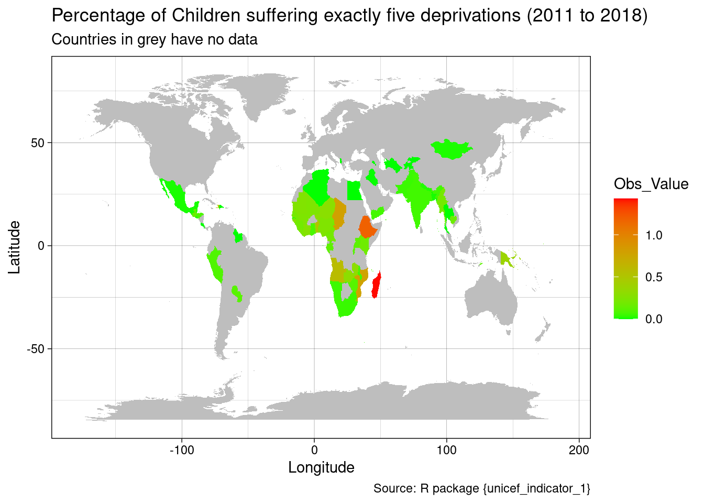
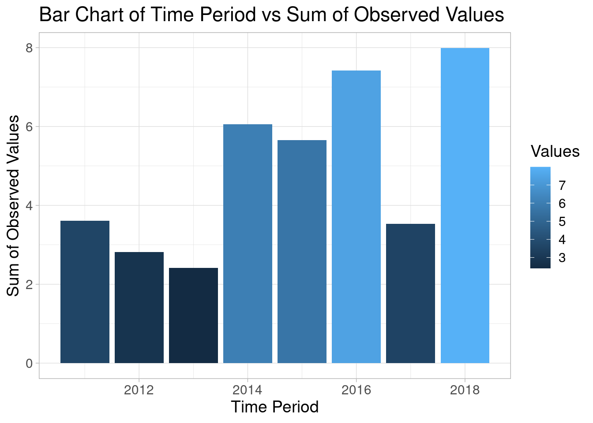
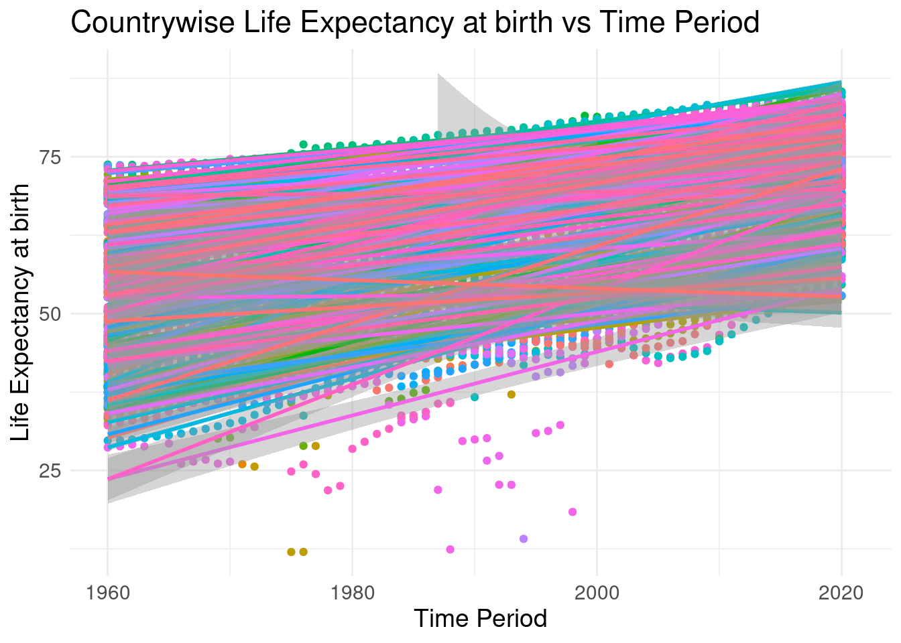
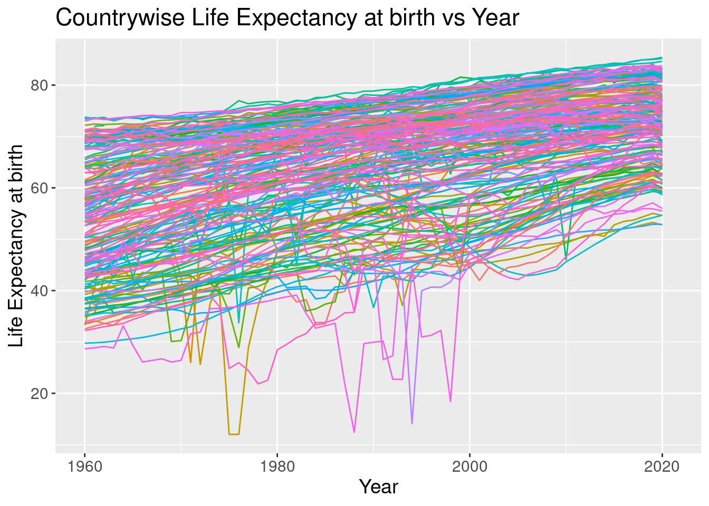

A Data-Driven Quarto Report
Quarto Assignment
Child Poverty
Child Poverty is a significant social issue that is affecting millions of children worldwide due to the economic, social, and environmental factors. The consequences of child poverty can be devastating, including:
- malnutrition
- poor health
- lack of education and
- limited opportunities for a better future.
In this quarto report, I will raise awareness on child poverty wherein I will analyze the data, gain insights and explore the extent of child poverty and life expectancy at birth globally using four R visualizations:
- World map
- Bar chart
- Time series plot
- Scatter plots with linear regression
Data
To create the visualizations, I will use data from one of the data file, unicef_indicator_1.csv from the UNICEF database and therein is included a specific indicator- “Percentage Children suffering exactly five deprivations. Homogeneous moderate standards” which measures how many children suffer at least five deprivations using homogenous standards and moderate thresholds. For more information about this indicator: https://data.unicef.org/indicator-profile/PV_CHLD_DPRV-E5-HS/
One more data file, unicef_metadata.csv from the World Development Indicators by the World Bank (https://databank.worldbank.org/source/worlddevelopment-indicators) will also be used alongwith the indicator file for the scatter plot visualisation and time series visualisation.
World Map Visualization: Global Child Poverty Rates from 2011 to 2018
Children experience poverty differently from adults as they have unique needs to survive and thrive. Their dreams and hopes are different, and they rely on adults to support and take care of their necessities, rather than having to earn a living themselves. Therefore, when assessing child poverty, it is crucial to use a direct multidimensional measurement that considers various dimensions, such as clothing, education, health, housing, information, nutrition, play, sanitation, and water, which are all essential rights that constitute poverty.
The below world map visualisation shows the percentage of children suffering exactly five deprivations such as education, health, housing, nutrition, sanitation, and water based on comparable standards and moderate thresholds between the years 2011 and 2018. Africa continent has highest rates of children living in poverty. Madagascar is the country with highest proportion of children suffering from exactly five deprivations.
Bar Chart: Poverty Rates Over Time(2011 to 2018)
The second visualization of a bar chart shows how the child poverty rates have changed globally from 2011 to 2018.

Scatter Plot with Linear Regression: Countrywise Correlation between Life expectancy at birth and the year
The third visualization uses the combination of the two dataset files- unicef_indicator_1.csv and unicef_metadata.csv displaying a scatter plot with linear regression showing the global correlation between the life expectancy at birth and the time period from 1960 to 2020.

Time Series Plot: Countrywise changes in life expectancy at birth over time from 2011 to 2018
The fourth visualization is a time series plot also uses the combination of the two dataset files- unicef_indicator_1.csv and unicef_metadata.csv and shows how the life expectancy at birth have changed globally from 1960 to 2020.
